Твёрдый переплёт
Книги в твердом переплете — это надежность, долговечность и презентабельный внешний вид.

Такой переплет делает издание прочным, устойчивым к износу и придает ему солидность. В типографии «ПК КЕМ» мы предлагаем профессиональное изготовление книг в твердом переплете для издателей, корпоративных клиентов и частных заказчиков.
За время работы типографии большую часть книг мы выполнили именно в твёрдом переплёте с дизайнерскими покрытиями крышек и корешков.
При заказе печати цветных книг в твердом переплете от 50 экземпляров - дизайн обложки бесплатно!
У нас могут напечатать книгу любым тиражом
- Издательства: сигнальные образцы, пробные тиражи, допечатка тиражей.
- Корпоративные клиенты: корпоративные издания, брендбуки, презентационные портфолио.
- Рекламные агентства: юбилейные книги, рекламные каталоги или индивидуальные ежедневники и блокноты.
Варианты твердого переплета
В зависимости от назначения и бюджета можно выбрать один из следующих видов переплета
- Классический цельнокрытый переплет – используется для официальных изданий, учебников, научных и художественных книг.
- Комбинированный (с обложкой из материала и бумажной суперобложкой) – позволяет создать эффектное оформление и защиту для книги.
- Переплет с интегральной обложкой – гибкий, но при этом прочный вариант, который сочетает свойства мягкого и твердого переплета.
Выбор материалов
Для создания качественного переплета используются разные материалы
- Картон высокой плотности — основа жесткости и долговечности переплета.
- Бумага и мелованный картон — для изготовления суперобложек и форзацев.
- Бумажные и тканевые покрытия (лен, бумвинил, кожзам, баладек) — улучшают тактильные и эстетические свойства обложки.
- Лаки и ламинация — обеспечивают дополнительную защиту от влаги и загрязнений.
Популярные форматы и размеры
Мы изготавливаем книги стандартных и нестандартных форматов. Наиболее востребованные
- A4 (210×297 мм) — идеально подходит для учебников и деловой литературы.
- A5 (148×210 мм) — удобный вариант для художественных книг и справочников.
- Квадратные форматы (200×200 мм, 210×210 мм) — стильное решение для альбомов и подарочных изданий.
Варианты отделки для стильного оформления
Дополнительные элементы отделки помогут сделать книгу еще привлекательнее
- Тиснение (золотом, серебром, цветной фольгой) — придает книге статусность и премиальный вид.
- Лакировка и ламинирование — защита от механических повреждений и влаги.
- Фигурная вырубка — нестандартная форма книги для оригинального дизайна.
- Ляссе и каптал — детали, делающие книгу удобнее и солиднее.
Печать книги "Царицыно" в твёрдом переплёте №5

- Формат изделия: 267х297мм
- Формат блока: 262х290мм
- Красочность: 4+4
- Бумага: Мелованная 200 грамм, дизайнерская
- Кол-во страниц: 298
- Корешок: Круглый, ляссе
- Переплет: Твердый, комбинированный
- Печать блока: 4+4
- Скрепление: КШС
- Тиснение: черной фольгой
Печать книги в твёрдом переплёте 7БЦ с КШС
 Печать книги в твёрдом переплёте 7БЦ с КШС
Печать книги в твёрдом переплёте 7БЦ с КШС 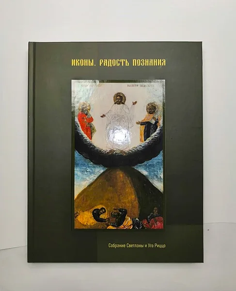
Печать книги в твёрдом переплёте 7БЦ с КШС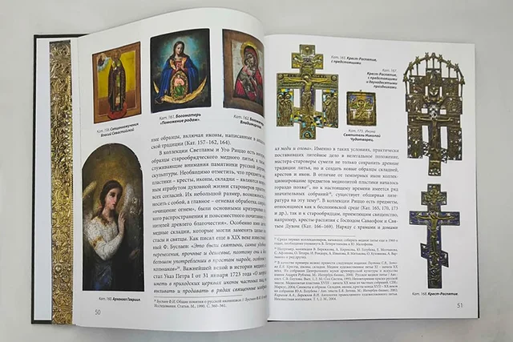
Печать книги в твёрдом переплёте 7БЦ с КШС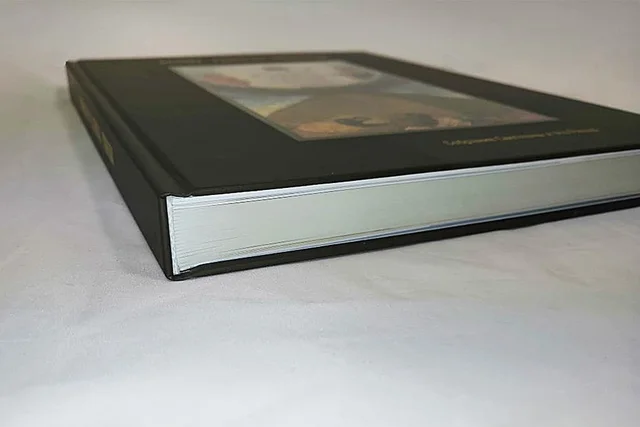
Печать книги в твёрдом переплёте 7БЦ с КШС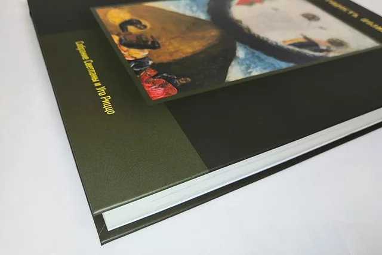
Печать книги в твёрдом переплёте 7БЦ с КШС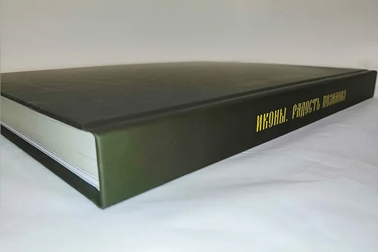
Печать книги в твёрдом переплёте 7БЦ с КШС- Формат изделия: 225х295мм
- Формат блока: 220х290мм
- Бумага: 170 гр.
- Кол-во страниц: 256
- Лакировка: UF лак
- Ламинация: Матовая
- Переплет: 7БЦ
Печать книги в твёрдом переплёте 7БЦ "Лига ставок" в суперобложке

- Формат изделия: 250х330 мм
- Формат блока: 240х320 мм
- Объем: 128
- Бумага: 130 гр мелованная
- Обложка: Твердая с матовой ламинацией
- Печать блока: высокая линиатура 250 lpi
- Скрепление: клеевое швейное
Печать книги в твёрдом переплёте 7Б "Дом Музыки"
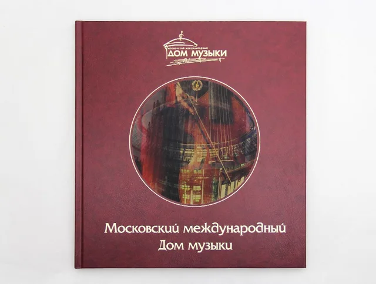
Печать книги в твёрдом переплёте 7Б "Дом Музыки"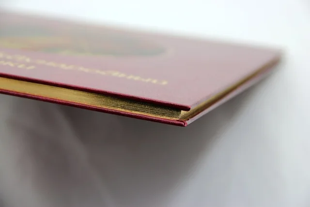
Печать книги в твёрдом переплёте 7Б "Дом Музыки"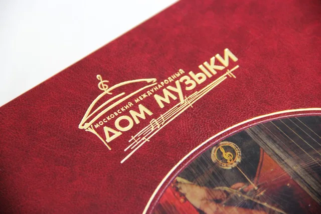
Печать книги в твёрдом переплёте 7Б "Дом Музыки"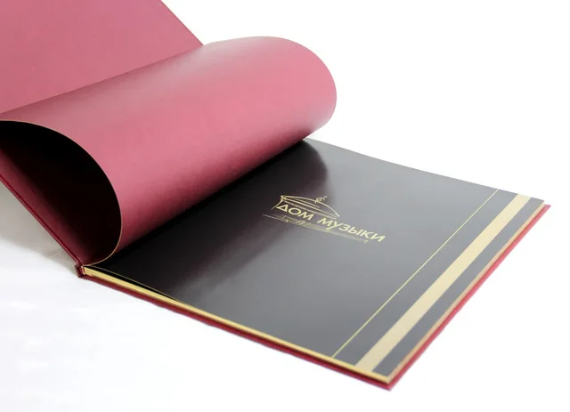
Печать книги в твёрдом переплёте 7Б "Дом Музыки"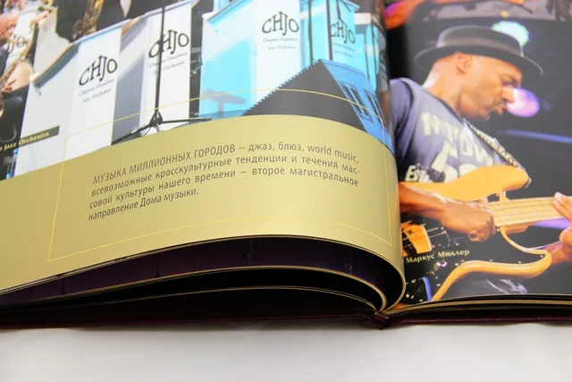
Печать книги в твёрдом переплёте 7Б "Дом Музыки"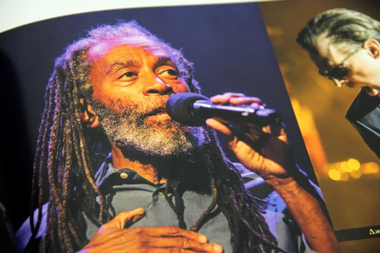
Печать книги в твёрдом переплёте 7Б "Дом Музыки"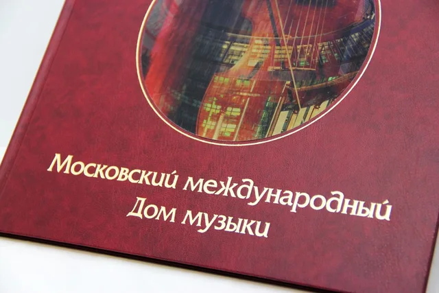
Печать книги в твёрдом переплёте 7Б "Дом Музыки"- Формат изделия: 290х300
- Формат блока: 280х290
- Корешок: прямой
- Обложка: Твердая крышка с матовой ламинацией
- Вклейка в обложке с полноцветной печатью и ламинацией soft touch
- Золочение срезов блока
- Выборочный UF лак в блоке на фотографиях
- форзац и нахзац из дизайнерской бумаги
Печать книги в твёрдом переплёте (2 тома) 7БЦ

- Формат изделия: 210х297мм
- Формат блока: 200х290мм
- Объем: 164
- Бумага: 115 гр мелованная
- Обложка: Из дизайнерской бумаги с печатью
Печать серии книг в твёрдом переплёте 7БЦ с тиснением фольгой
- Формат изделия: 70х100/8 370х250мм
- Формат блока: 300х250
- Бумага: 170 грамм
- Кол-во страниц: 296
- Скрепление: Ниткошвейное
- Тиснение: Золотой фольгой
- Эксклюзивная серия книг по изобразительному искусству
- Собрав полную серию на корешках вы увидите карту России
Печать книги в твёрдом переплетном материале на тканевой основе в футляре
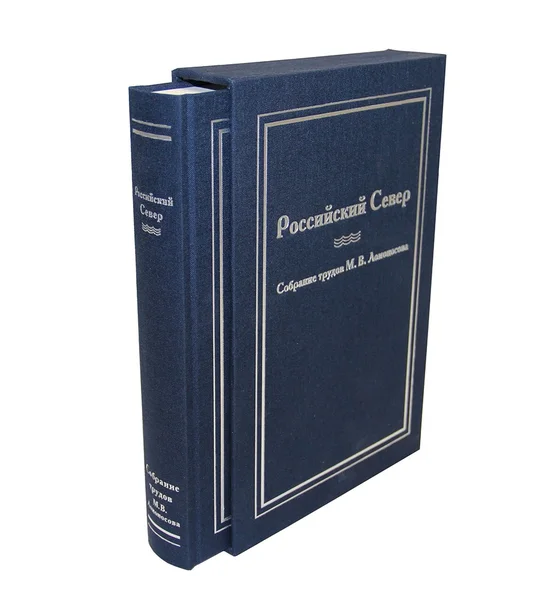
Печать книги в твёрдом переплетном материале на тканевой основе в футляре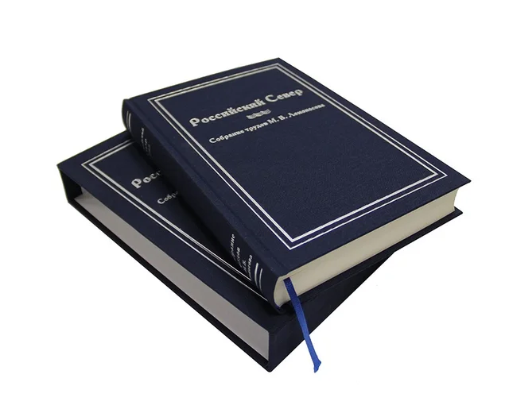
Печать книги в твёрдом переплетном материале на тканевой основе в футляре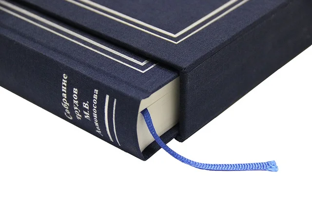
Печать книги в твёрдом переплетном материале на тканевой основе в футляре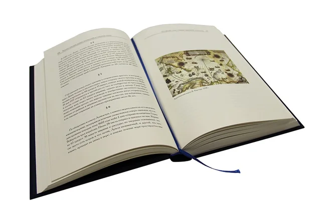
Печать книги в твёрдом переплетном материале на тканевой основе в футляре- Формат изделия: 60х90/16 170х242мм
- Формат блока: 160х234мм
- Красочность: 1+1/4+4
- Бумага: 90 грамм, офсетная
- Кол-во страниц: 496
- Переплет: Кругленный, ляссе
- Тиснение: Матовой серебряной фольгой
Печать книги в твёрдом переплёте в футляре имитирующем натуральную кожу
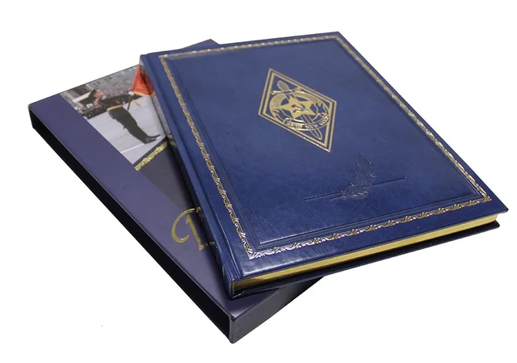
Печать книги в твёрдом переплёте в футляре имитирующем натуральную кожу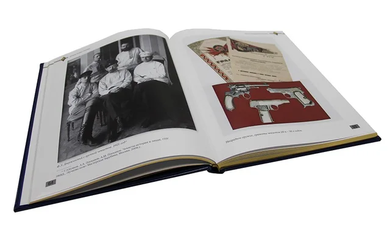
Печать книги в твёрдом переплёте в футляре имитирующем натуральную кожу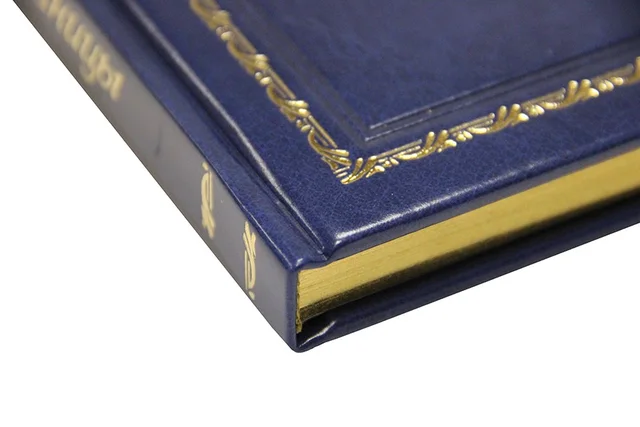
Печать книги в твёрдом переплёте в футляре имитирующем натуральную кожу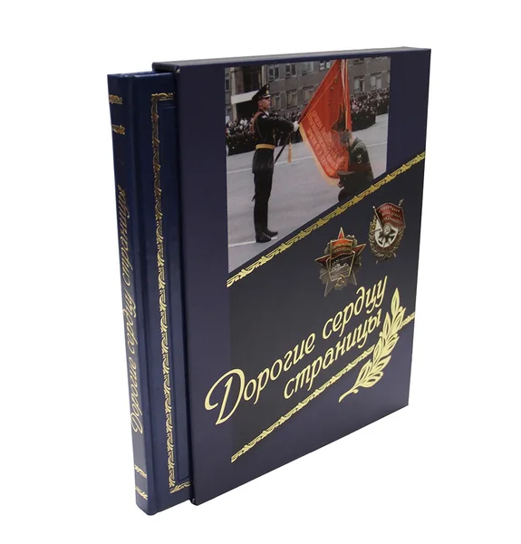
Печать книги в твёрдом переплёте в футляре имитирующем натуральную кожу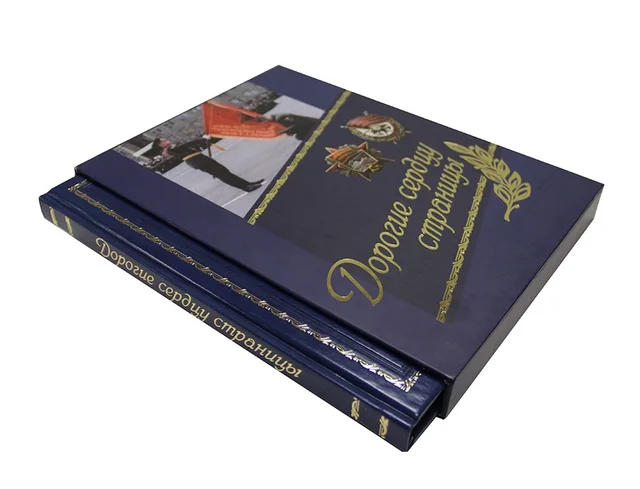
Печать книги в твёрдом переплёте в футляре имитирующем натуральную кожу- Формат изделия: 60x90/8 220x294 мм
- Формат блока: 212х280мм
- Бумага: 130 грамм, мелованная
- Кол-во страниц: 280
- Переплет: Материал имитирующий натуральную кожу, производство италии
Преимущества книг в твердом переплете
Выбирая твердый переплет, вы получаете
- Долговечность и устойчивость к повреждениям.
- Представительный внешний вид.
- Удобство чтения и хранения.
- Возможность реализации уникального дизайна.
Почему стоит заказать книги в полиграфическом комплексе «ПК КЕМ»?
Наша типография предлагает
- Современные технологии печати и переплета, обеспечивающие высокое качество продукции.
- Индивидуальный подход к каждому заказу — от одного экземпляра до крупного тиража.
- Широкий выбор материалов и отделки для создания эксклюзивных изданий.
- Соблюдение сроков — выполняем заказы быстро и без задержек.
Какие тиражи вы печатаете?
Мы можем напечатать как небольшой тираж от 10 экземпляров, так и крупные партии книг.
Можно ли заказать книгу нестандартного размера?
Да, мы работаем с индивидуальными форматами и можем предложить нестандартные решения.
Как долго изготавливаются книги в твердом переплете?
Сроки зависят от сложности заказа и тиража, но в среднем составляют от 5 до 10 рабочих дней.
Можете ли вы сделать дизайн обложки?
Да, у нас есть профессиональные дизайнеры, которые помогут разработать оформление книги.
Если вам нужно качественное и долговечное издание, закажите книги в твердом переплете в типографии «ПК КЕМ». Мы гарантируем профессиональное исполнение, надежные материалы и современное оформление. Оставьте заявку прямо сейчас!